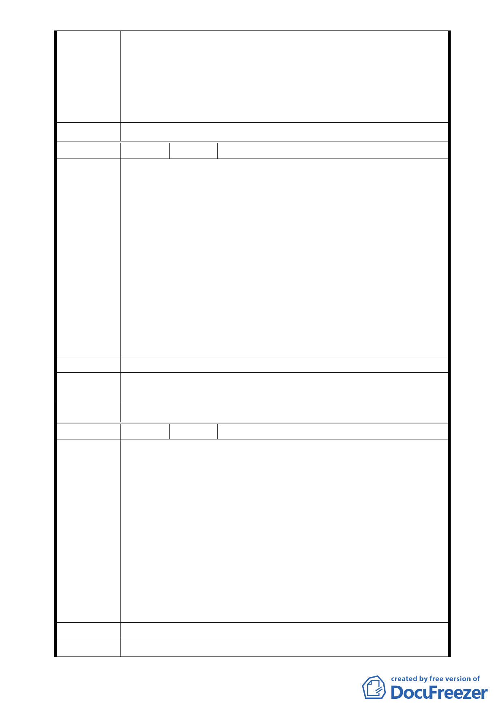

三、 本案地藏王廟未來改建應以既有容積及量體為限，並於
計畫說明書中加註係供堂方自行使用、不得有營利之行
為，至所存放骨灰罈數量是否予以載述或設限將提報大
會決定。
四、案內若涉有違建之處理，請市府權責單位逕依相關規定辦
理。
委員會決議 本案主要計畫依市府所提修正後內容通過。
編 號 4 陳情人 鄭春子
記得在準備研究所考試時，每天都會到慈惠堂所附設的圖書館
去唸書，那裡的環境相當清幽安靜，適合靜下來專心準備課業。
在慈惠堂的圖書館待久了，才發現它除了提供圖書資訊外，也
成為這塊土地的文藝休閒交流中心，時常有不同行業的專業人
士利用此處舉辦活動。再者廟方舉辦遊園會，促進社區民眾之
感情，每至夏日，是夏令營活動讓國小學童有機會接觸宗教，
陳 情 理 由 藉此傳達感恩之心。另開辦不同的才藝研習，提升居民生活素
質，如書法班、舞蹈團、國樂班、合唱團、道教科儀班、解籤
等，甚而於母親節時褒揚偉大的母愛，重陽節之際，提倡敬老
活動。
慈惠堂雖只是宗教性質之機構，但它所在開辦各項不同性質的
活動，已超越宗教界線，為地方盡到一己之力。因此我相信在
變更通過後能造福地方百姓的生活，帶來更多元化的享受。
建 議 辦 法 贊成本變更案。
專案小組
審 查 結 論 錄案供參。
委員會決議 本案主要計畫依市府所提修正後內容通過。
編 號 5 陳情人 錡秀美
我是錡秀美，在我人生發生驟變之時，松山慈惠堂給予我精神
支助，撫平了我的際遇與傷痕，有了宗教信仰的洗滌，很快地，
我也能在松山慈惠堂用同理心去幫助需要幫助的人，我參加了
「愛心基金組」，遵從堂主指示去做白米施放、兒童營養午餐、
兒童夏令營，探訪貧病、急難救助、協助社會的邊緣人。松山
陳情理由
慈惠堂每年所做公益活動，相信台北市政府等，大家有目共睹，
不用再述。
堂主常說：取之於十方大眾，用之於十方大眾，無私奉獻不求
回報的母娘教義精神。
如果政府德政能夠給予慈惠堂用地變更，相信慈惠堂在環境上
與人文上會更進步，還會做更多有益國家與社會的活動，對於
安定人心、社稷平定，絕對相當有影響力。
建 議 辦 法 贊成本變更案。
專 案 小 組 錄案供參。
- 11 -